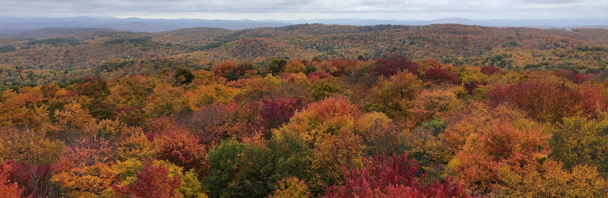

The "Upper Valley" refers to the upper third of the Connecticut River basin. It's where Ethan grew up, and where Carley and Ethan have spent a lot of time together. With the Green Mountians to the west and the White Mountains to the east, it's a place of rolling hills, white clapboard churches, and woods that are lovely, dark and deep. One of the reasons why we wanted to have our wedding here was to share this beautiful, and meaningful, place with our family and friends.